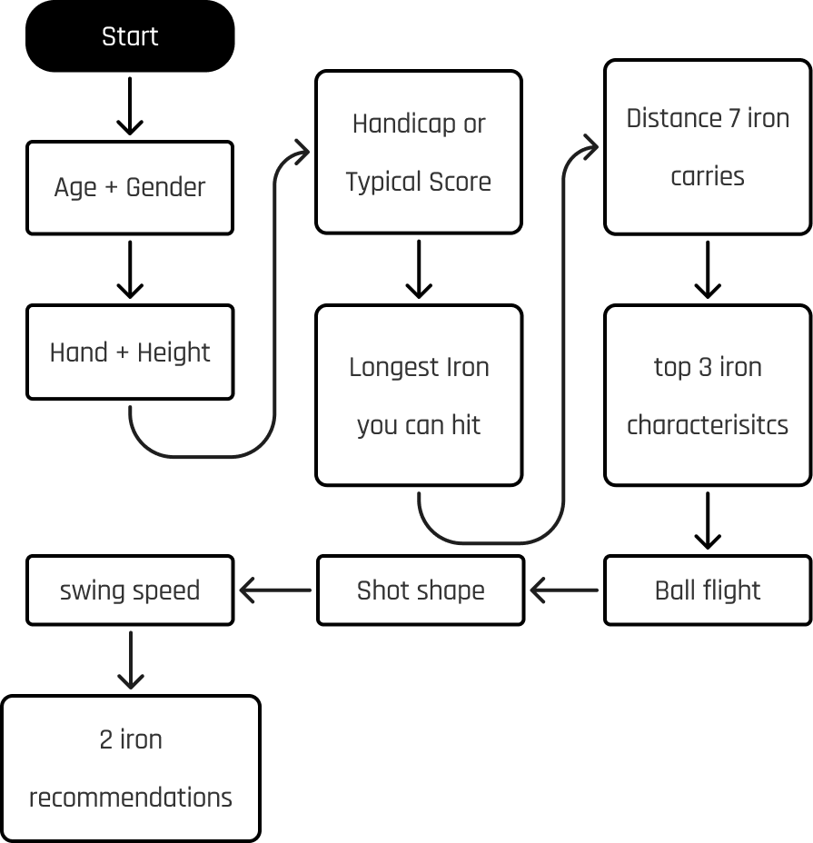
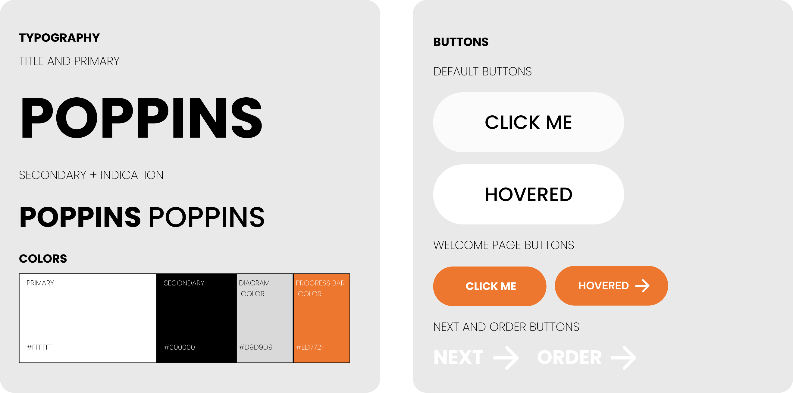

Context
This project was completed as part of a half-semester assignment for
the Human-Computer Interaction course at the University of
Wisconsin-Madison. Over several weeks, the design process progressed
from initial UX research and contextual inquiry to usability testing
and the creation of a high-fidelity prototype. The final design,
developed in Figma, was crafted to align seamlessly with Takomo Golf's
existing brand identity and website template.
Behind the Design Process
What I did
Visual Design
UI Design
Prototyping
Usability Testing
Brand Integration
What I used
Figma
Adobe Illustrator
Adobe Photoshop
More
Type: Group Project
Duration: 5 weeks
Client: Takomo Golf
Time: September - October 2024
Introduction
Takomo Golf, a new golf company founded in 2019, has started to gain
significant popularity in recent years for its high-quality equipment
and modern approach to the sport. However, their website still lacks
certain features compared to top competitors in the industry, such as
an online golf fitting tool. To address this gap, our team focused on
designing a personalized and accessible online fitting application. By
leveraging insights from user research and iterative design, we
developed a high-fidelity prototype that aligns seamlessly with Takomo
Golf’s brand identity.
Problem
The process of fitting golf clubs can be inaccessible for many golfers
due to the lack of convenient online tools. Existing tools often feel
impersonal, leaving users unsure about the recommendations they
receive. Takomo Golf’s website lacked this feature altogether,
limiting its ability to compete with larger brands offering these
services.
Goal
Design and prototype an online fitting application that seamlessly
integrates with Takomo Golf’s existing site (both visually and
functionally) and helps golfers of all skill levels select the best
clubs for their game.
Contextual Inquiry
We conducted a contextual inquiry with primary users (experienced
golfers) and secondary users (new golfers), excluding non-golfers.
After the interviews, we created models (flow, sequence, and cultural)
to map user interactions and uncover insights, ensuring the design met
the needs of active golfers.
Maps


Findings
Golfers want detailed recommendations to justify high-cost
purchases, but limited questions reduce confidence. A clean,
intuitive design is essential for usability, while trust in
recommendations prevents users from seeking validation elsewhere.
The tool’s flexibility for home use is convenient but can lead to
mistakes if the process isn’t clear.
🧐
Detailed recommendations
Takeaway
A key takeaway from our contextual inquiry, models, and findings was
the importance of creating a tool that combines detailed,
trust-building recommendations, a simple and intuitive interface, and
clear guidance throughout the process. Addressing these elements would
ensure the tool meets the diverse needs of both experienced and new
golfers while maintaining accessibility and usability in various
settings.
HMW Statment
How might we create a trustworthy and user-friendly online golf
fitting tool that provides personalized recommendations?
Our Approach
A step-by-step web-based design was the best solution to address user
needs for an intuitive and trustworthy online golf fitting tool. This
format allowed users to navigate easily, track their progress, and
make informed decisions, all while maintaining consistency with Takomo
Golf’s brand identity.
We incorporated user feedback and implemented features to enhance
clarity, trust, and usability throughout the tool.
Key Points:
-
Clear step-by-step pages with progress indicators and back buttons
for easy navigation.
-
Detailed club recommendations with specs for options like IRON
101T and comparisons to alternatives like IRON 201.
-
A clean layout with a simple color palette, large buttons, and
labels to simplify the user journey.
-
Transparent explanations to build trust and confidence in the
recommendations.
Low-Fidelity Screens & Prototype
The low-fidelity prototyping phase began with sketching wireframes to
outline the user journey and establish a clear structure for the
online fitting tool. These wireframes guided the creation of
interactive low-fi designs, focusing on simple layouts, intuitive
navigation, and essential input fields like sliders and dropdowns.
This stage allowed us to test the user flow and identify pain points
early, setting a solid foundation for refinement in the high-fidelity
phase.

Final Screens & Prototype
Our final prototype reflects user insights and fully aligns with
Takomo Golf's brand identity. We streamlined the experience by
removing the AI swing analysis, refining question wording, and
applying a cohesive color scheme and typography from the Takomo style
guide. Each screen features a background image that immerses users in
a lush golf course, making it feel like a real professional iron
fitting. The result is a clean, user-friendly interface that delivers
personalized iron recommendations, bridging convenience and quality.

Get Started Page

Step 1: Age & Gender
Understanding a golfer’s age and gender helps
determine physical strength, flexibility, and potential swing
tendencies. This information can influence shaft selection, club
weight, and forgiveness level, ensuring the recommended iron set is
suited to the player's general capabilities.

Step 2: Hand & Height
Knowing the golfer’s dominant hand ensures the
correct club orientation, while height helps determine the proper club
length and lie angle. A golfer’s height relative to arm length affects
how they address the ball, making it essential for a comfortable and
efficient swing.

Step 3: Handicap or Typical Score
A golfer’s handicap or average
score provides insight into their skill level. Higher-handicap players
may benefit from more forgiving irons with larger sweet spots, while
lower-handicap players may need more precision and workability in
their clubs.

Step 4: Longest Iron You Can Hit
This question helps assess a
golfer’s ability to hit longer irons, which require more ball-striking
skill. Players who struggle with long irons may be better suited for
hybrids or higher-lofted irons, while better ball strikers may prefer
traditional long irons.

Step 5: Distance Your 7-Iron Carries
The carry distance of a 7-iron
is a strong indicator of a golfer’s overall power and swing speed.
This data helps fitters determine loft gaps, shaft flex, and clubhead
design that will best optimize distance and control.


Step 6: Top 3 Iron Characteristics
By selecting their preferred
characteristics, such as forgiveness, feel, or workability, golfers
can prioritize what matters most to their game. This allows the
fitting to be customized to match their playing style and personal
preferences.
Step 8: Shot Shape
Shot shape helps fitters understand a golfer’s
natural ball movement (fade, draw, or straight). This information can
be used to recommend irons with weighting or offset that help correct
ball flight or enhance natural shot tendencies.
Step 7: Ball Flight
A golfer’s typical ball flight—whether high, low,
or mid—affects the recommended iron set. Players who hit the ball too
high may benefit from stronger-lofted clubs, while those who struggle
to get the ball in the air may need irons with a lower center of
gravity.
Step 9: Swing Speed
Swing speed directly influences shaft flex and
club selection. A faster swing speed often requires a stiffer shaft
for control, while a slower swing speed benefits from more flexible
shafts that help generate additional launch and distance.
Page 10: Iron Recommendations
Based on all collected data, the final
page provides three tailored iron recommendations that best suit the
golfer’s physical attributes, skill level, and playing preferences.
These recommendations optimize performance, consistency, and overall
enjoyment of the game.
